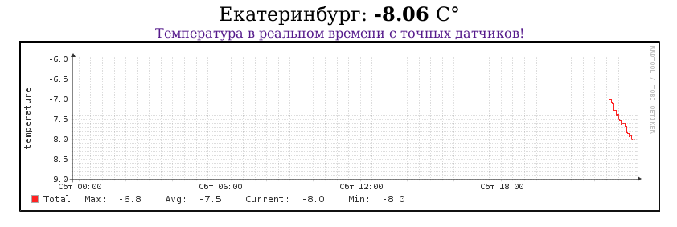
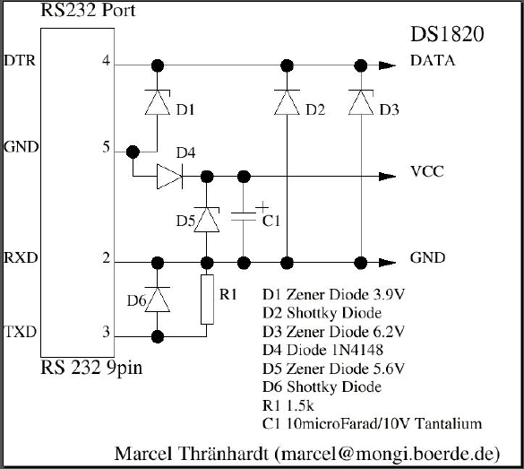

|
Nov 13, 2011
|
Рассмотрим как можно мониторить температуру при помощи сервера. Алгоритм довольно простой: подключаем датчик температуры к компу, пишем скрипт который снимает данные с датчика, записываем данные и отдаем по запросу пользователю. Результат будет выглядеть так:
Датчик температуры можно выбрать любой. Я сделал для COM порта по схеме “Электронный термометр на DS-18B20”. Стоимось вышла около 450р., без кожуха и разъемов раза в 2 дешевле.
Сам датчик температуры (DS-18B20) можно соединять параллельно с другими (до
100шт.) и он будет нормально работать на одной шине длиной до 300м. После
подключения скорей всего он определится на последовательном порту /dev/ttyS0.
Для снятия показателей нужна программа digitemp.
$ sudo apt-get install digitemp
Чтобы получить данные введем:
$ /usr/bin/digitemp_DS9097 -t 0 -s /dev/ttyS0 -q -o "%.2C"
-7.62
При обращении к датчику он блокируется и если в этот момент запустить еще раз команду digitemp то она вернет пустое значение. Для избежания этой ситуации напишем скрипт который по крону каждую минуту будет снимать данные и записывать в файл:
#!/bin/bash
echo `/usr/bin/digitemp_DS9097 -t 0 -s /dev/ttyS0 -q -o "%.2C"` > /projects/scripts/temp.cashe
Сейчас напишем скрипт который будет формировать rrd базу и добавлять в нее данные из temp.cashe каждую минуту.
from rrdcontroller import RRDController
import time
def update_rrd(rrd):
f = open('temp.cashe')
temp = f.read()
rrd.update(temperature=temp)
rrd.graph(period='day')
rrd.graph(period='week')
rrd.graph(period='month')
rrd.graph(period='year')
if __name__ == '__main__':
rrdfile = 'media/temperature.rrd'
imgdir = 'media'
rrd = RRDController(rrdfile=rrdfile, static_path = imgdir)
rrd.create()
while(1):
update_rrd(rrd)
time.sleep(60)
И файл rrdcontroller.py
from pyrrd.rrd import RRD, RRA, DS
from pyrrd.graph import DEF, CDEF, VDEF
from pyrrd.graph import LINE, AREA, GPRINT
from pyrrd.graph import ColorAttributes, Graph
import os, logging, time
class RRDController(object):
def __init__(self, rrdfile, static_path):
self.rrdfile = rrdfile
self.static_path = static_path
def delete(self):
os.unlink(self.rrdfile)
def create(self):
if os.path.exists(self.rrdfile):
self.rrd = RRD(self.rrdfile)
return
dss = []
ds1 = DS(dsName="temperature", dsType="GAUGE", heartbeat=120,
minval=-10000000.0, maxval=100000000.0)
dss.append(ds1)
day = 24 * 60 * 60
week = 7 * day
month = day * 30
quarter = month * 3
half = 365 * day / 2
year = 365 * day
step = 60
rras = []
rra1 = RRA(cf="AVERAGE", xff=0.5, steps=1, rows=day/step)
rra2 = RRA(cf="AVERAGE", xff=0.5, steps=30, rows=week/(30*step))
rra3 = RRA(cf="AVERAGE", xff=0.5, steps=120, rows=month/(120*step))
rra4 = RRA(cf="AVERAGE", xff=0.5, steps=720, rows=year/(720*step))
rras.extend([rra1, rra2, rra3, rra4])
rras.append(rra1)
self.rrd = RRD(self.rrdfile, step=step, ds=dss, rra=rras)
self.rrd.create(debug=False)
time.sleep(2)
def update(self, temperature):
print temperature
self.rrd.bufferValue(time.time(), temperature)
self.rrd.update()
def graph_temperature(self, period='day'):
def1 = DEF(rrdfile=self.rrdfile, vname='temp', dsName="temperature",
cdef="AVERAGE")
# TOTAL
vdef1 = VDEF(vname='max', rpn='temp,MAXIMUM')
vdef2 = VDEF(vname='avg', rpn='temp,AVERAGE')
vdef3 = VDEF(vname='last', rpn='temp,LAST')
vdef4 = VDEF(vname='min', rpn='temp,MINIMUM')
line1 = LINE(1, defObj=def1, color='#FF2222', legend='Total')
gprint1 = GPRINT(vdef1, "Max\\: %5.1lf %S")
gprint2 = GPRINT(vdef2, "Avg\\: %5.1lf %S")
gprint3 = GPRINT(vdef3, "Current\\: %5.1lf %S")
gprint4 = GPRINT(vdef4, "Min\\: %5.1lf %S\\n")
ca = ColorAttributes()
ca.back = '#FFFFFF'
ca.canvas = '#FFFFFF'
ca.shadea = '#000000'
ca.shadeb = '#111111'
ca.mgrid = '#CCCCCC'
ca.axis = '#333333'
ca.frame = '#AAAAAA'
ca.font = '#333333'
ca.arrow = '#333333'
img = "temperature-%s.png" % period
imgname = self.static_path +"/"+ img
start = '-1'+period
g = Graph(imgname, imgformat='PNG', step=start,
vertical_label='temperature', color=ca,
width=700, height=150
)
g.data.extend([def1, vdef1, vdef2, vdef3, vdef4, line1, gprint1,
gprint2, gprint3, gprint4])
g.write()
def graph(self, period='day'):
self.graph_temperature(period)
После запуска скрипта он создаст RRD базу если ее еще нет, начнет каждые 60 сек добавлять значения и отрисовывать графики. Осталось только отдать эти графики по запросу. Для этого используем фреймворк Tornado.
Создадим файл weather_srv.py в той же директории где папка media с нашими графиками:
#!/usr/bin/python
#coding: utf-8
import tornado.ioloop
import tornado.web
import os
class MainHandler(tornado.web.RequestHandler):
def get(self):
f = open('temp.cashe')
temp = f.read()
self.render("index.html", temp=temp)
application = tornado.web.Application([
(r"/", MainHandler),
(r"/media/(.*)", tornado.web.StaticFileHandler, {"path": os.path.join(os.path.dirname(__file__), "media")}),
])
if __name__ == "__main__":
application.listen(8009)
tornado.ioloop.IOLoop.instance().start()
Шаблон index.html
<html>
<head>
<title>Температура на улице</title>
</head>
<body bgcolor="white" text="black">
<center><font size="5">{{ escape(temp) }}</b>C°</font>
<img src="media/temperature-day.png" title="температура за день">
</center>
</body>
</html>
weather_srv.py и радуемся графикам.Дополнительно для прочтения: